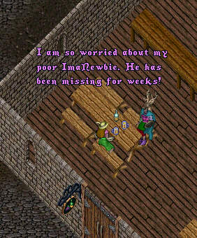

Episode 56: ImaNewbie and the Lost Tribe of Amazon Women (Part 2) - It has been weeks since Irma has heard from ImaNewbie and she is beginning to worry about him big time. Our scene opens in a tavern where Irma and her brother ImaDufus are discussing ImaNewbie's whereabouts.

Meanwhile...
End of Part 2...Stay 'tooned for next weeks' exciting episode!